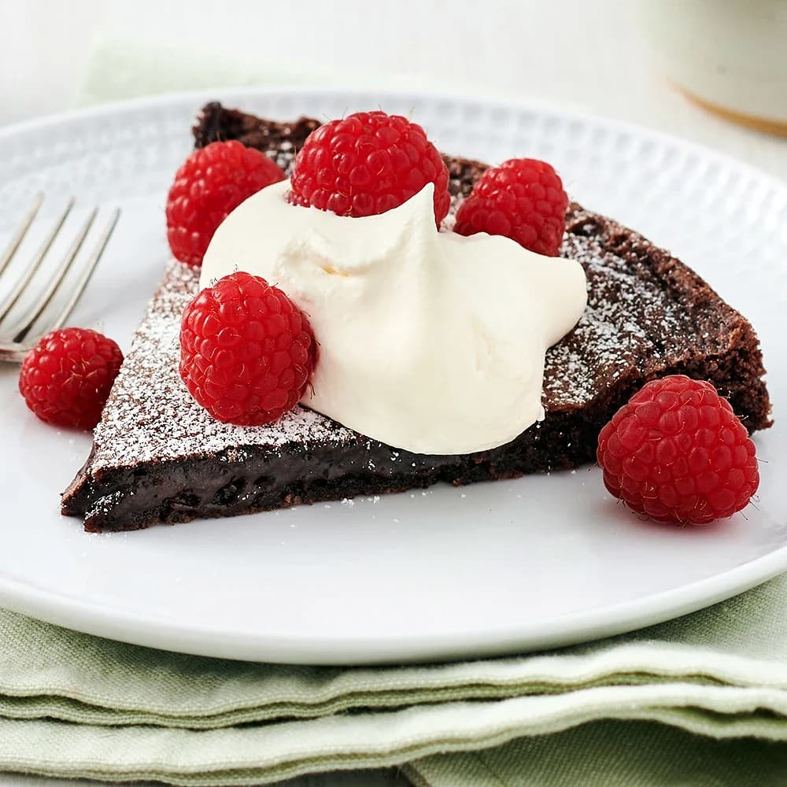

Kladkaka

- Smör till formen
- 100g Smör
- 2st Ägg
- 2dl strösocker
Såhär gör du....... 1.Sätt ugnen på 200°C under och övervärme.2.Smörj och bröa en form med löstagbar kant, ca 24 cm i diameter (för 8 bitar) eller spänn fast ett bakplåtspapper på botten.3.Smält smöret i kastrull, låt svalna något.4.Vispa ihop ägg och socker (använd inte en elvisp).5.Blanda kakao, vaniljsocker, vetemjöl och salt i en bunke och rör ner i äggblandningen.6.Tillsätt det smälta smöret och blanda försiktigt ihop till en jämn smet och häll sedan över smeten i formen.7.Grädda mitt i ugnen i ca 10-15 minuter (öka eller minska tiden vid behov beroende på hur kladdig du vill ha den).8.Ta ut kladdkakan och låt svalna.9.Sikta florsocker över om så önskas. Servera med vispad grädde och färska bär.